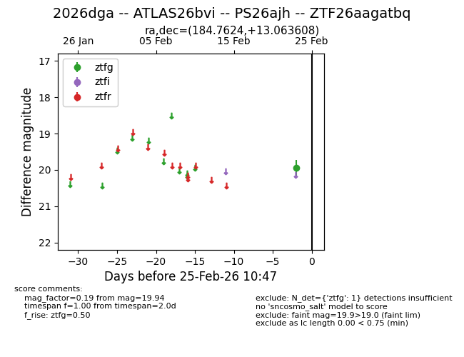
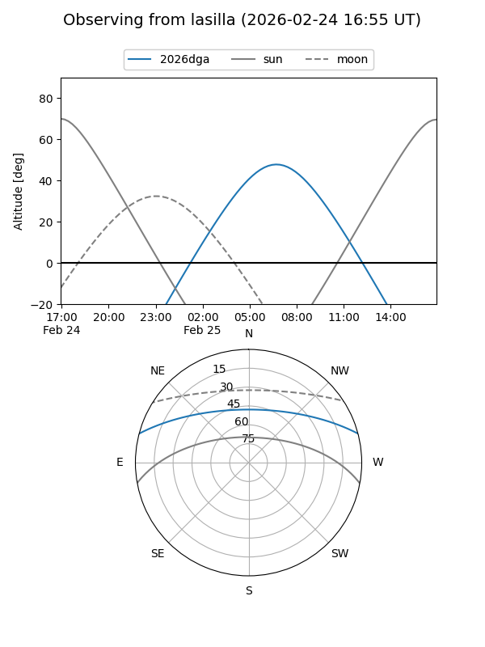
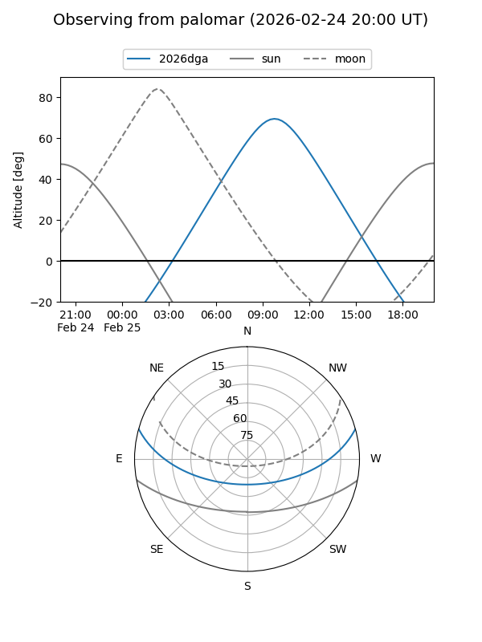

2026dga
Target 2026dga at 2026-02-25 10:48
Aliases and brokers:
FINK: link
Lasair: link
ALeRCE: link
TNS: link
YSE: link
alt names
ZTF26aagatbq (ztf,fink_ztf)
2026dga (tns,yse)
ATLAS26bvi (atlas)
PS26ajh (panstarrs)
Coordinates:
equatorial (ra, dec) = 184.7624,+13.06361
equatorial (HMS+DMS) = 12:19:02.97,+13:03:48.99
galactic (l, b) = (273.0298,+74.02446)
Flags:
Photometry:
last ztfg=19.94
1 ztfg detections
Lightcurve

Visibility


Additional plots